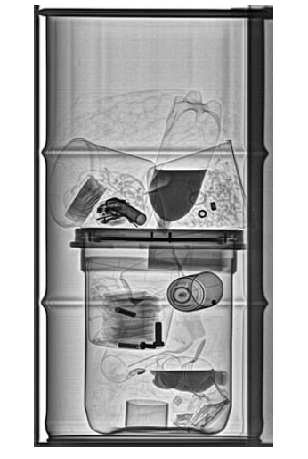

SCANNIX SA is specialized in the
development and sales of nuclear
spectroscopy equipment and
radioprotection systems.
Scannix offers a wide range of
measurement devices dedicated
to the nuclear industry.
SCANNIX SA provides expertise and costeffective solutions in the following fields:
- Nuclear Power
- Waste and D&D
- Environmental monitoring
- Nuclear Safeguards and Surveillance
- Environmental and Radiochemistry laboratories
- Health Physics
- Research and Education
- Military
- In Vivo and In Vitro Measurements
Along with the extensive portfolio SCANNIX SA is offering comprehensive services including on site installations and setup, commissioning, and maintenance of existing tools, whatever their origin.
Area of services:
- Training
- Site Specific Customizations
- Routine System Management and Maintenance
- Upgrade existing installations
- Calibration Services
- Service Contracts (maintenance)
- Measurement Services

Contact Person
Mr Alexis Roman
Sales Engineer
email: info@scannix.com
tel : +32 69 64 06 04
fax: +32 69 78 00 79
www.scannix.com
Z.I. Tournai Ouest 1
3 rue du Mont D’Orcq
7503 Froyennes
Belgium
Contact Person
Mr Alexis Roman
Sales Engineer
email: info@scannix.com
tel : +32 69 64 06 04
fax: +32 69 78 00 79
www.scannix.com
Z.I. Tournai Ouest 1
3 rue du Mont D’Orcq
7503 Froyennes
Belgium